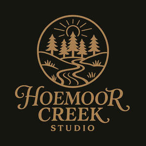

Trade Mark Journal No.2025/037 12 September 2025
UK00004256013 28 August 2025 (16,18,24,25)

- Class 16
- Daily planners; Weekly planners; Monthly planners; Day planners; Year planners; Wall planners; Covers for weekly planners; Desk top planners; Planners [printed matter]; Office paper stationery; Binder paper; Binders [stationery]; Paper folders [stationery]; Paper stationery; Pocket calendars; Office stationery; Organizers for stationery use; Stationery; Party stationery; Calendar refills; Notepads; Protractors [for stationery and office use]; Folders [stationery]; Stationery folders; Notebook dividers; Document holders [stationery]; Pictures; Photographs; Watercolor pictures; Photo prints; Art pictures; Photo albums; Coloring pictures; Colouring pictures; Prints in the nature of pictures; Picture postcards; Photograph albums; Photographs [printed]; Printed photographs; Brag books [photo albums]; Mounts of paper for pictures; Postcards and picture postcards; Mini photo albums; Photograph album pages; School photographs; Signed photographs; Paintings [pictures], framed or unframed; Picture books; Picture cards; Photograph mounts; Photo albums and collectors' albums; Photo storage boxes; Photographic albums; Paper for printing photographs; Photograph corners; Adhesive corners for photographs; Plastic pages with pockets for holding photographs; Portraits; Photographic prints; Photo mounting corners; Scrapbook albums; Unmounted and mounted photographs; Mounted and unmounted photographs; Paper picture mounts; Collages; Photographic reproductions; Collector's photographs of players; Mounting photographs (Apparatus for -); Photographs (Apparatus for mounting -); Apparatus for mounting photographs; Postcards; Cardboard picture mounts; Scrapbook pages; Pictorial prints.
- Class 18
- Tote bags; Grocery tote bags; Carry-all bags; Bags; Duffle bags; Cross-body bags; Crossbody bags; Duffel bags; Drawstring bags; Carry-on bags; Canvas bags; Toiletry bags; Luggage bags; Carrying bags; Leather bags; Diaper bags; Duffel bags for travel; Belt bags and hip bags; Sling bags; Canvas shopping bags; Leather bags and wallets; Bucket bags; Clutch bags; Cloth bags; Leather shopping bags; Bags for umbrellas; Luggage, bags, wallets and other carriers; Messenger bags; Reusable shopping bags; Souvenir bags; Belt bags; Shoulder bags; Kit bags; Nappy bags; Umbrella bags; Shoe bags; Nose bags [feed bags]; Bags (Nose -) [feed bags]; Garment bags; Bags for clothes; Wheeled bags; Beach bags; Knitting bags; Mesh shopping bags; Mesh bags for shopping; Bags [envelopes, pouches] of leather, for packaging; Bags [envelopes, pouches] for packaging of leather; Bags [envelopes, pouches] of leather for packaging; Baby carrying bags; Waterproof bags; Travel bags; Bags for travel; Makeup bags; Wrist mounted carryall bags; Knitted bags; Camping bags; All-purpose carrying bags; Wash bags for carrying toiletries; Gym bags; Cosmetic bags; Towelling bags; Bags for carrying pets; Make-up bags; Hand bags; Book bags; Wheeled shopping bags; Tool bags of leather, empty; Boot bags; Sling bags for carrying babies; Traveling bags; Gladstone bags; Weekend bags; Toilet bags; Bags for campers; Roll bags; Cabin bags; Shoe bags for travel; Roller bags; Garment bags for travel; Bags (Garment -) for travel; Bags for carrying animals; Bum bags; Toiletry bags sold empty; Barrel bags; Waist bags; Hiking bags; Attaché bags; Pet clothing; Clothing for animals; Clothing for pets; Pets (Clothing for -); Bags for sports clothing.
- Class 24
- Towels; Bath towels; Bath sheets (towels); Bathroom towels; Tea towels; Beach towels; Terry towels; Kitchen towels; Kitchen towels of cloth; Towels of textiles; Dish towels; Glass cloths [towels]; Hand towels; Hooded towels; Turkish towels; Bath wrap towels; Yoga towels; Towels of textile; Towels [textile]; Towels [of textile]; Face towels; Golf towels; Glass-cloth [towels]; Towels [textile] for the beach; Dish towels for drying; Large bath towels; Face towels of textiles; Kitchen towels [textile]; Kitchen towels of textile; Children's towels; Household linen, including face towels; Hand towels of textile; Textile face towels; Face towels of textile; Towels [textile] for kitchen use; Japanese cotton towels (tenugui); Quilts of towel; Towel sheet; Linens; Textile hair drying towels; Turban towels for drying hair; Textile exercise towels; Bedsheets; Bed linen and blankets; Turkish towel; Mats of linen; Bath linen; Face cloths of towelling; Towels [textile] for use in connection with toddlers; Towels [textile] for use in connection with babies; Bath sheets; Bed linen of paper; Cloth napkins; Bath linen, except clothing; Bed clothes and blankets; Face towels [made of textile materials]; Towels made of textile materials; Disposable bedding of paper; Tea cloths; Make-up removal towels [textile] other than impregnated with toilet preparations; Paper pillowcases; Cloths; Towelling coverlets; Bed sheets of paper; Linen cloth; Towels of textile sold in pack form; Textile fabrics for use in the manufacture of towels; Linen; Kitchen linen.
- Class 25
- Clothing; Knitwear [clothing]; Jackets [clothing]; Ready-to-wear clothing; Woolen clothing; Furs [clothing]; Garments for protecting clothing; Layettes [clothing]; Clothing layettes; Linen clothing; Headbands [clothing]; Headbands for clothing; Gloves [clothing]; Gloves as clothing; Clothes; Aprons [clothing]; Maternity clothing; Kerchiefs [clothing]; Jerseys [clothing]; Denims [clothing]; Shorts [clothing]; Cashmere clothing; Capes (clothing); Gabardines [clothing]; Oilskins [clothing]; Leather clothing; Clothing of leather; Leather (Clothing of -); Collars [clothing]; Silk clothing; Parts of clothing, footwear and headgear; Knitted clothing; Veils [clothing]; Hoods [clothing]; Corsets [clothing, foundation garments]; Windproof clothing; Wristbands [clothing]; Embroidered clothing; Belts [clothing]; Belts for clothing; Bandeaux [clothing]; Waterproof clothing; Rainproof clothing; Casual clothing; Visors [clothing]; Jackets being sports clothing; Stuff jackets [clothing]; Jackets (Stuff -) [clothing]; Clothing for leisure wear; Bottoms [clothing]; Playsuits [clothing]; Ready-made clothing; Latex clothing; Trunks being clothing; Infant clothing; Woven clothing; Drawers [clothing]; Drawers as clothing; Leisure clothing; Clothing for children; Athletic clothing; Ties [clothing]; Clothing for sports; Sports clothing; Muffs [clothing]; Bodies [clothing]; Clothing for babies; Tops [clothing]; Clothing for infants; Clothing for cycling; Weatherproof clothing; Pockets for clothing; Water-resistant clothing; Triathlon clothing; Handwarmers [clothing]; Clothing for skiing; Fabric belts [clothing]; Thermal clothing; Beach clothing; Chaps (clothing); Cowls [clothing]; Men's clothing; Fishing clothing; Dance clothing; Mitts [clothing]; Plush clothing; Shirts; Sweat shirts; Turtleneck shirts; Short-sleeve shirts; Polo shirts; Dress shirts; Short-sleeved shirts; Knit shirts; T-shirts; Open-necked shirts; Long-sleeved shirts; Pique shirts; Shirts for suits; Collared shirts; Sleep shirts; Football shirts; Golf shirts; Soccer shirts; Corduroy shirts; Maternity shirts; Rugby shirts; Camouflage shirts; Woven shirts; Short-sleeved T-shirts; Aloha shirts; Tee-shirts; Yoga shirts; Ramie shirts; Tennis shirts; Shirts and slips; Mock turtleneck shirts; Night shirts; Hooded sweat shirts; Sports shirts; Button-front aloha shirts; Sport shirts; Casual shirts; Fishing shirts; Under shirts; Hunting shirts; Button down shirts; Sports shirts with short sleeves; Shirt yokes; Yokes (Shirt -); Moisture-wicking sports shirts; Printed t-shirts; Undershirts; American football shirts; Bibs, sleeved, not of paper; Polo sweaters; Sweatshirts; Tank-tops; Undershirts for kimonos (juban); Padded shirts for athletic use; Shirt fronts; Hoodies; Babies' pants [clothing]; Sleeveless jackets; V-neck sweaters; Sleeved jackets; Nappy pants [clothing]; Jerseys; Blouses; Dress pants; Trousers shorts; Sweat pants; Clothing for wear in wrestling games; Polo knit tops; Sweat shorts; Jeans; Sweaters; Sweat jackets; Denim pants; Leggings [trousers]; Turtleneck sweaters; Stuff jackets; Bibs, not of paper; Sweatpants; Babies' pants [underwear]; Quilted jackets [clothing]; Knit jackets; Snap crotch shirts for infants and toddlers; Collars for dresses; Paper hats for use as clothing items; Boy shorts [underwear]; Pants; Golf clothing, other than gloves; Denim jackets; Bandanas; Bib shorts; Belts (Money -) [clothing]; Money belts [clothing]; Hats (Paper -) [clothing]; Paper hats [clothing]; Waistcoats [vests]; Nightshirts; Mock turtleneck sweaters; Undershirts for kimonos (koshimaki); Undershirts for kimonos [koshimaki]; Braces [suspenders] for clothing / Suspenders [braces] for clothing; Long sleeved vests; Party hats [clothing]; Maternity shorts; Bathrobes; Hats; Beanie hats; Toques [hats]; Bobble hats; Fascinator hats; Cloche hats; Mitres [hats]; Fur hats; Woolly hats; Baseball hats; Fashion hats; Miters [hats]; Bucket hats; Baseball caps and hats; Rain hats; Sports caps and hats; Sun hats; Top hats; Ski hats; Beach hats; Chefs' hats; Ushankas [fur hats]; Small hats; Fake fur hats; Bonnets [headwear]; Beanies; Paper hats for wear by nurses; Paper hats for wear by chefs; Fedoras; Clothing for horse-riding [other than riding hats]; Caps [headwear]; Caps being headwear; Scarves; Sedge hats (suge-gasa); Scarfs; Visors [headwear]; Visors being headwear; Frames (Hat -) [skeletons]; Hat frames [skeletons]; Snoods [scarves]; Bandanas [neckerchiefs]; Visors [hatmaking]; Headgear for wear; Boas [clothing]; Bandannas; Bonnets; Headwear; Head scarves; Shawls and headscarves; Headbands; Berets; Knitted caps; Caps with visors; Fur coats and jackets; Headdresses [veils]; Knitted gloves; Gloves for apparel; Fingerless gloves as clothing; Headgear; Sun visors [headwear]; Fur jackets; Kerchiefs; Cashmere scarves; Fezzes; Shawls; Jumpers [sweaters]; Leather headwear; Silk scarves.
Mark Bullen